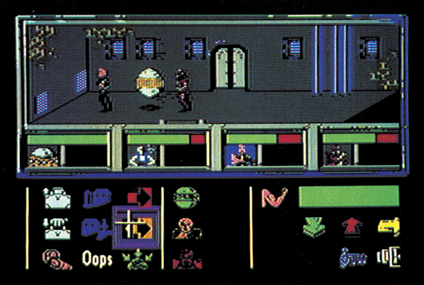
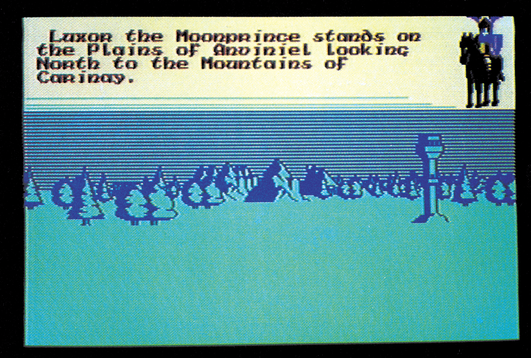
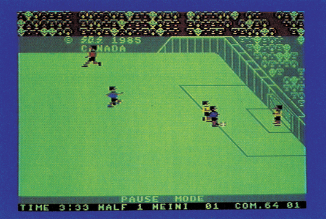
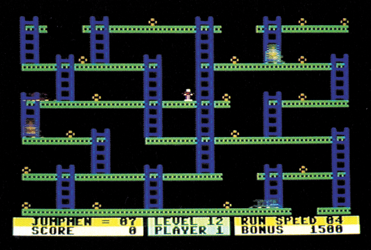
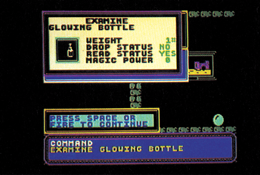
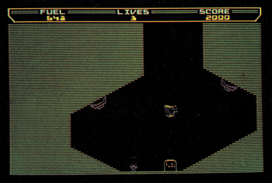

Billiges Vergnügen?
Billigspiele, oder vornehmer ausgedrückt, Spiele zum Taschengeldpreis, werden immer beliebter und qualitätsmäßig besser. Wir haben 6 besonders gute Spiele getestet, die weniger als 15 Mark kosten.
Als vor wenigen Monaten Mastertronic seine »M.A.D«-Reihe startete, in der Spiele der 40-Mark-Klasse für nur 15 Mark angeboten werden, begann ein hektisches Treiben auf dem Billigspielemarkt. Firmen, die sich schon länger mit Billigsoftware beschäftigen, glänzten mit hervorragenden Neuerscheinungen, Viele andere Firmen drängten sich mit neuem Label (= Bezeichnung für eine Produktreihe wie etwa »M.A.D.« oder »Eurogold«) auf dem inzwischen heiß umkämpften Markt. Inzwischen muß es weit über 100 Billigspiele im Bereich von 10 bis 15 Mark geben. Diese regelrechte Schwemme von größtenteils sehr guten Billigspielen forderte geradezu dazu auf, einige Perlen aus dem umfangreichen Angebot herauszusuchen und sie hier im Rahmen unserer Spiele-Tests vorzustellen. Die nachfolgenden sechs Spiele gehören zum Besten das man für maximal 15 Mark bekommen kann. Unter den sechs Titeln ist sicher für jeden etwas dabei, denn fast alle Spielegattungen sind vertreten, egal ob Action-, Geschicklichkeits-, Strategie- oder Sportspiel.
Enigmaforce ist die Fortsetzung des etwa ein Jahr alten Spiels Shadowfire, das damals in der Fachpresse viel Aufsehen erregte. Zum Ende dieses ersten Spiels konnte die Intergalaktische Söldnertruppe Enigmaforce den Superschurken General Zoff festnehmen. Der hatte vorher jedoch noch genug Zeit, mit seinen Militärs dem Rest der Galaxis den Krieg zu erklären. Das Schiff, mit dem die Enigmaforce-Truppe den General zu einem sicheren Gefängnis-Planeten bringen will, wird sabotiert und muß auf einem anderen Planeten notlanden. Zoff kann entkommen. Dummerweise sind die reptilienartigen Einwohner des Planeten gerade in Kämpfe mit Zoff's Truppen verwickelt und deswegen soll der ganze Planet in wenigen Stunden zu Sternen-Staub zerbombt werden.

Die vier Mitglieder der Enigmaforce haben also eine ganze Menge zu tun: Erst einmal müssen sie den Anführer der Reptiloiden finden und um Unterstützung bitten, den Reptiloiden gleichzeitig aber auch gegen die Invasoren helfen. Danach muß General Zoff wieder eingefangen und ein weltraumtüchtiges Fahrzeug aufgetrieben werden, damit man wieder von diesem Planeten wegkommt.
Der Spieler steuert hier vier verschiedene Charaktere, die entweder in einer Gruppe oder auch einzeln durch die unterirdischen Anlagen des Planeten schleichen. Die Steuerung erfolgt über ein ausgeklügeltes Symbol-System, das viele Kommandos bietet. So kann man beispielsweise Gegenstände aufnehmen, untersuchen und benutzen, Waffensysteme auswählen und nachladen, oder die Kampftaktik der vier Mitglieder festlegen.
Enigmaforce ist ziemlich komplex aufgebaut und doch recht einfach zu spielen. Durch die gelungene Verquickung von Action-, Adventure- und Strategle-Elementen und zudem noch überdurchschnittlich guter Grafik und Musik ist Enigmaforce ein hervorragendes Spiel. Der niedrige Preis von nur 10 Mark erscheint fast unglaublich, denn in England kostet Enigmaforce umgerechnet knapp 40 Mark!
Doomdark's Revenge
Ähnliches gilt für Doomdark's Revenge, das aus demselben Software-Haus wie Enigmaforce kommt.

Doomdark's Revenge ist ein sehr komplexes Strategiespiel, das auch Adventure- und Rollenspiel-Elemente enthält. Die Story ist reichlich verwirrend und soll nur kurz umrissen werden.
Shareth ist eine böse Zauberin im Lande Icemark, und hegt Rachegelüste gegen das Nachbarland Midnight. So kidnappt sie Morkin, den Sohn von Luxor, Moonprince of Midnight. Luxor zieht nun mit seinen Armeen nach Icemark, um dort seinen Sohn zu befreien und Shareth das Handwerk zu legen.
Die politischen und familiären Verhältnisse in Icemark sind reichlich kompliziert und so gestaltet sich die Suche nach Verbündeten zum reinsten Adventure. Erschwerend kommt der Umfang des Spiels hinzu: Es gibt über 6000 (sechstausend) verschiedene Orte in Icemark, 128 verschiedene Charaktere und 128 für den Spielverlauf wichtige Gegenstände.
Der Spieler kann praktisch beliebig viele Charaktere steuern: Hat er einen neuen Verbündeten gewonnen, kann er die Kontrolle über diesen Charakter übernehmen und ihm dieselben Kommandos geben wie der Hauptfigur Luxor. So gestaltet sich »Doomdark's Revenge« zum gigantischen Strategiespiel, bei dem Armeen durch die Gegend geschoben und Kämpfe ausgetragen werden. Gleichzeitig muß man nach bester Adventure-Manier nach wichtigen versteckten Gegenständen Ausschau halten und diese dann richtig einsetzen.
Die verschiedenen Kommandos werden per Tastendruck in Menüform eingeblendet. So reicht eine relativ kurze Anleitung für dieses Mega-Spiel aus. Musik und Soundeffekte gibt es zwar keine, dafür aber eine recht ansprechende Grafik.
Wer mal in Strategiespiele reinschnuppern möchte und vom alltäglichen Action- und Adventure-Einerlei Abstand gewinnen will, der kann hier 10 Mark besonders gut anlegen.
Five-A-Side Soccer
Unser nächster Billigspiel-Tip ist ein Sportspiel, genauer gesagt ein Fußballspiel. Five-A-Side Soccer ist in der M.A.D-Reihe von Mastertronic erschienen. Dabei handelt es sich um eine Neuauflage des gleichnamigen Spiels von Anirog Software.

Der ungewöhnliche Name des Spiels entstand aus der Mannschaftszusammensetzung, da jede Mannschaft genau fünf Spieler (vier Feldspieler, ein Torwart) hat. Die Regeln entsprechen weitgehend den offiziellen Fußballregeln. Da Hallenfußball gespielt wird, gibt es kein Aus und somit auch keine Eckstö-Re. Als Ersatz dafür kann man seinen Gegenspieler per Feuerknopf foulen, was aber auch eine Verwarnung oder gar einen Elfmeter einbringen kann. Beim Elfmeterschießen wird, anstelle des Spielfelds, das Tor aus der Sicht des Elfmeterschützen gezeigt.
Five-A-Side läßt sowohl zu zweit gegeneinander als auch alleine gegen den Computer spielen. Der Computer erweist sich dabei als recht guter Gegner, der auf der höchsten der drei einstellbaren Stufen nur sehr schwer zu schlagen ist. Das Elfmeterschießen läßt sich auch alleine aufrufen.
Five-A-Side wird ähnlich gespielt wie »International Soccer« von Commodore: Der Spieler steuert immer nur den Mann, der dem Ball am nächsten ist, die anderen werden halbwegs intelligent vom Computer gesteuert. Eine Ausnahme bildet der Torwart, der gesteuert werden kann, sobald sich der Ball dem Tor gefährlich nähert.
Die Grafik von Five-A-Side ist guter Durchschnitt. Die Feld-Spieler sind zwar recht klein, aber sauber animiert. Beim Elfmeterschießen wird der Torwart dann allerdings fast bildschirmfüllend dargestellt. Musik gibt es zwar keine, dafür aber einige Soundeffekte und eine Sprachausgabe für den Schiedsrichter.
Bedenkt man den niedrigen Preis von 15 Mark, kann man die spritzige Fußball-Simulation allen Sportspiel-Freaks empfehlen.
Jumpman
Spiele-Kenner werden sich wundern, was dieser alte Klassiker von Epyx in unserem Billigspiele-Test zu suchen hat. Unter dem Label »Eurogold« ist der Vater der Jump-And-Run-Spiele wieder neu aufgelegt worden und kostet knappe 10 Mark.

Schon 1983, als Jumpman das erste Mal in Amerika erschien, erdachte man sich zu Spielen nette Hintergrund-Stories. Jumpman muß Bomben einsammeln, die böse Aliens in einer Jupiter-Raumbasis liegengelassen haben. Damit Jumpman nicht zu leicht an die Bomben herankommt, haben diese Aliens in den Räumen der Jupiter-Basis diverse Fallensysteme installiert, die Jumpman bei seiner Arbeit behindern und ihm eines seiner sieben Leben kosten können. Jumpman kann die Gerüste in den einzelnen Räumen per Leiter oder Seil erklimmen und kann, dank zweier Jet-Stiefel, besonders weite Sprünge auf andere Gerüstteile machen.
Auf den ersten Blick scheint Jumpman ein überaltertes Spiel zu sein, da die Grafik den heutigen Standards nicht mehr entspricht. Doch durch die Jahre hat sich Jumpman einen gewissen Reiz erhalten können, der seither bei keinem anderen Spiel seiner Gattung auftrat.
Dies hängt wahrscheinlich damit zusammen, daß jeder der25Screens von Jumpman völlig anders ist. Mal warten tödliche Roboter auf unseren Helden, mal bewegt sich das Gerüst, auf dem er die Bomben einzusammeln hat und in manchen Screens ist sogar er selber seine einzige Gefahr, weil jeder seiner Sprünge eine Explosion auslöst. Es macht immer wieder Spaß, Jumpman zu spielen, weil in jedem Screen neue Überraschungen auf ihn und den Spieler warten.
Wer ein auf längere Zeit interessantes Geschicklichkeitsspiel zum kleinen Preis sucht, trifft mit dem etwas betagten Jumpman sicher keine schlechte Wahl.
Spellbound
Weg von einem Klassiker zu einem brandneuen Produkt, das ebenfalls aus der M.A.D-Schmiede stammt und somit 15 Mark kostet.

Spellbound ist die ideale Mischung aus Action- und Adventurespiel mit reichlich witziger Rahmenhandlung: Der kleine »Magic Knight« (magischer Ritter) ist Lehrling beim großen Zauberer Gimbal. Dieser will gerade per Zauberspruch einen Reispudding etwas versüßen, als er sich verspricht und damit einen anderen, fatalen Zauber auslöst. Er und sieben weitere Personen, darunter auch der Magic Knight, werden in ein unbekanntes Schloß teleportiert.
Dort angekommen ist nur noch der kleine Magic Knight zu weiteren Handlungen fähig. Er muß dafür sorgen, daß alle acht Personen wieder dahin gehen, wo sie hergekommen sind.
So trippelt er nun durch das Schloß und muß, wie in jedem Adventure, eine große Zahl von Rätseln lösen, bis er alle Charaktere befreien und von Gimbal zurückzaubern lassen kann.
Magic Knight wird mit dem Joystick durch das Schloß gesteuert. Auf Knopfdruck erscheint ein Bildschirmfenster mit einem Menü, das alle derzeit möglichen Befehle anzeigt. So kann man Gegenstände nehmen, untersuchen, benutzen, und so weiter. Teilweise führen diese Menüs in Unter- und Unter-Unter-Menüs, so daß man mindestens genau so viele Kommandos wie in einem normalen Adventure zur Verfügung hat, sich aber nicht mit der Eingabe der einzelnen Wörter und Sätze herumplagen muß. Ist der Befehl eingegeben worden, verschwinden alle geöffneten Fenster wieder.
Spellbound ist ein sogenanntes Realtime-Adventure. Auch wenn Magic Knight nichts unternimmt, bewegen sich die anderen Charaktere durch das Schloß. Deswegen steht auch nur eine begrenzte Zeit zur Lösung des Adventures zur Verfügung. Außerdem sind in manchen Räumen des Schloßes schnelle Bewegungen notwendig, da dort böse Gefahren auf Magic Knight lauern.
Die Grafik ist zwar nicht besonders bunt, aber sehr detailreich gemacht. Als Hintergrundmusik steuerte Rob Hubbard eine seiner zahlreichen Kompositionen bei. Einen einzigen Nachteil konnten wir bei Spellbound entdecken: Der Spielstand läßt sich leider nicht abspeichern, man muß also immer wieder von vorne beginnen. Ansonsten ist Spellbound aber ein hervorragendes Spiel, für das 15 Mark eigentlich viel zu wenig sind.
Thrust
Als letztes Billigspiel haben wir noch eine besondere Perle aus dem Action-Genre. Thrust von Firebird wartet weder mit großartiger Grafik noch mit besonderem neuen Spielprinzip auf, ist aber derart fesselnd, daß man es als Action- und Geschicklichkeits-Fan eigentlich nicht verpassen darf.

Hintergrundstory gibt es hier wenig: Der Spieler muß zur Bewältigung der Energiekrise daheim auf der Erde von diversen Minenplaneten je eine Energiekugel klauen und den sowieso nicht mehr benötigten Planeten durch Vernichten seines Reaktorgebäudes zerstören.
Das Raumschiff des Spielers kann nach links und rechts gedreht werden, ein Druck aufs Gaspedal verleiht ihm dann noch den notwendigen Schub. So kann man sich gegen die Gravitation der einzelnen Planeten durchsetzen.
Der Spielverlauf selber ist dann recht einfach: Auf dem Planeten alle Anlagen abschießen, die zurückschießen könnten, Energiekugel schnappen, Reaktor zerstören und schleunigst abhauen, denn nach gelungener Sprengung bleiben nur noch 10 Sekunden Zeit zur Flucht in den Hyperraum.
Einfach fantastisch ist die Simulation der Gravitaton und Trägheit gelungen. Hat man eine Energiekugel am Raumschiff per Laser-Lasso festgemacht, wird das Fliegen des Schiffs zur schwierigen Aufgabe. Die Kugel schwingt unter dem Schiff hin und her, pendelt beim Bremsen nach vorne, zieht das Schiff mit sich mit, und so weiter. Wer dann noch durch die engen unterirdischen Höhlen fliegen kann, ohne anzuecken, darf sich Meister-Ihruster nennen.
Die Grafik ist dem einfachen Spielverlauf angepaßt und macht auf den ersten Blick nicht vielher. Dennoch ist sie Außerst effektiv und überzeugt durch sauberes Scrolling. Zu einigen netten Soundeffekten gesellt sich eine reißerische Titelmusik von Rob Hubbard, die den Sound-Chip heißlaufen läßt. Wer Actionspiele mag, für den führt kein Weg an T'hrust vorbei, noch dazu bei dem fantastischen Preis von nur 10 Mark. Thrust ist zumindest unser liebstes Billigspiel, da man es immer wieder mal spielen kann, sei es nur für ein paar Minuten oder gleich für einige Stunden. Humorvoll betrachtet sind die Niedrigpreise der sechs vorgestellten Spiele eigentlich eine Unverschämtheit. Wo sollen denn da die anderen Spiele-Produzenten bleiben, deren Programme 30, 40 oder noch mehr Märker kosten?
(bs)